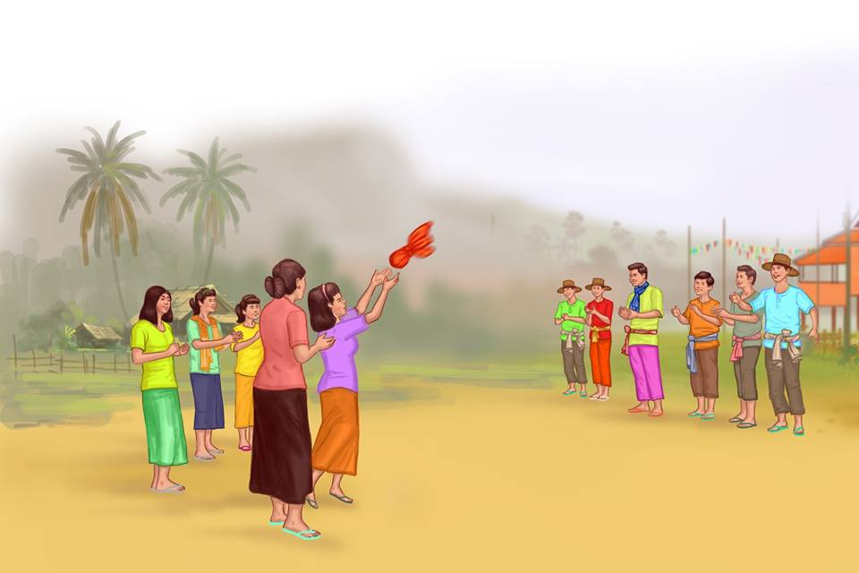
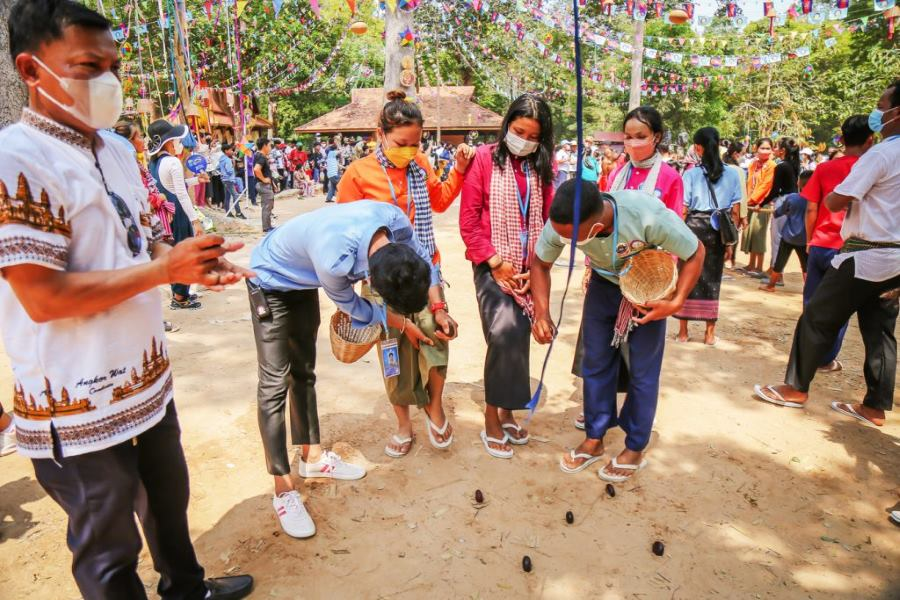
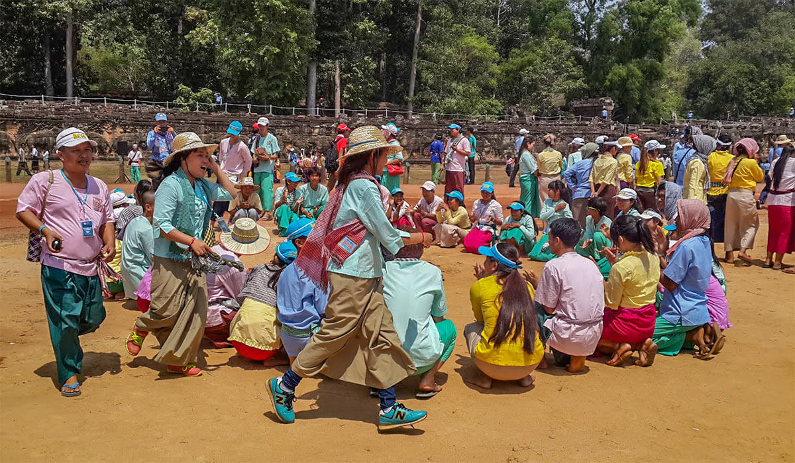
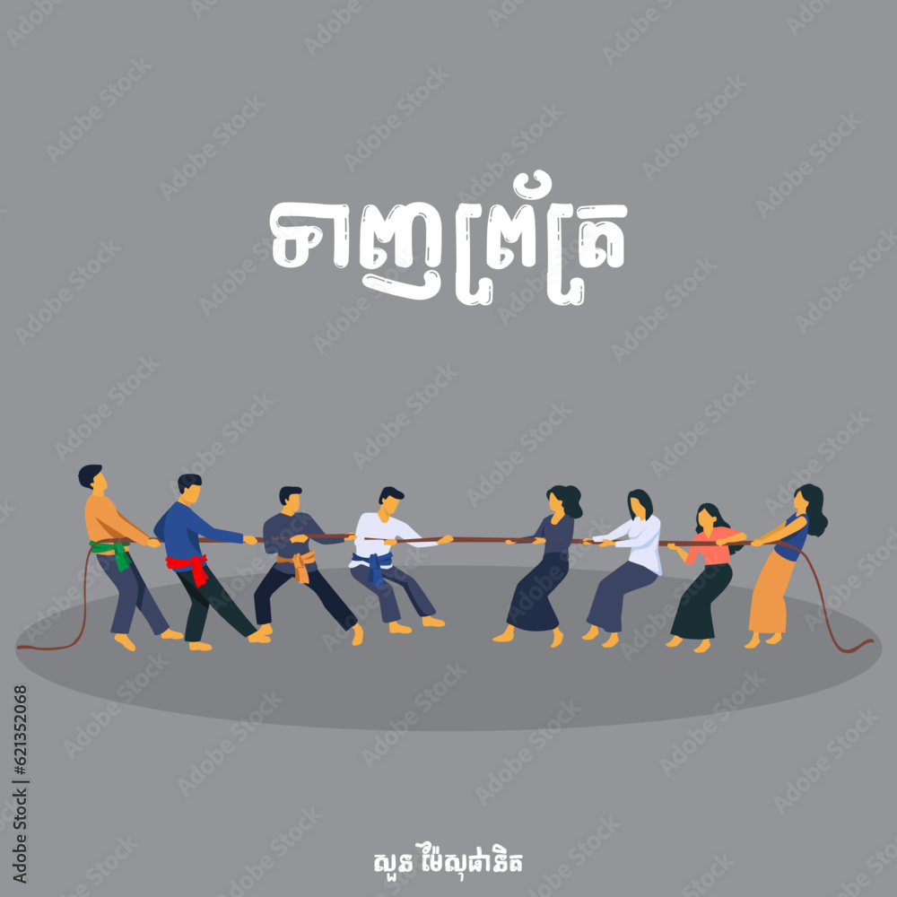
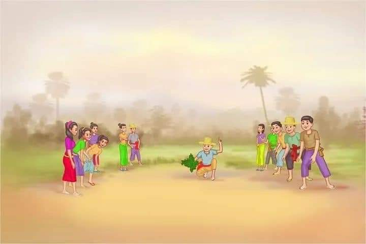
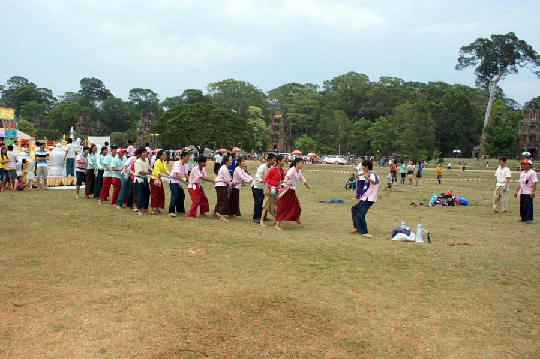

ល្បែងប្រជាប្រិយខ្មែរ
Traditional Khmer Games during Khmer New Year

ចោលឈូង (Chol Chhoung)
ល្បែងបោះរមូរក្រមាដាក់គ្នាទៅវិញទៅមករវាងក្រុមបុរស និងនារី អមដោយការច្រៀងរាំយ៉ាងសប្បាយរីករាយ។
A game where two groups (men and women) throw a rolled scarf to each other while singing and dancing.

បោះអង្គញ់ (Bos Angkunh)
ល្បែងប្រើផ្លែអង្គញ់ដើម្បីបាញ់ ឬបោះតម្រង់ទៅរកគោលដៅ ដើម្បីស្វែងរកអ្នកឈ្នះ និងអ្នកចាញ់។
Players throw or flick "Angkunh" seeds to hit targets, testing accuracy and focus.

លាក់កន្សែង (Leak Kanseng)
អ្នកលេងអង្គុយជារង្វង់ រួចលាក់កន្សែងនៅពីក្រោយខ្នងម្នាក់ៗដោយសម្ងាត់ ដើម្បីដេញវាយអ្នកដែលមិនដឹងខ្លួន។
A circle game where a scarf is hidden behind a player, testing their alertness and speed.

ទាញព្រ័ត្រ (Teanh Prot)
ល្បែងប្រឡងកម្លាំងដោយការទាញខ្សែព្រ័ត្ររវាងក្រុមពីរ ដែលបង្ហាញពីសាមគ្គីភាព និងភាពរឹងមាំ។
A tug-of-war game that represents teamwork and the collective strength of the community.

ដណ្តើមស្លឹកឈើ (Don Derm Slek Chheu)
អ្នកលេងត្រូវប្រើភាពរហ័សរហួនដើម្បីដណ្តើមយកស្លឹកឈើនៅកណ្តាល រួចរត់ត្រឡប់ទៅក្រុមខ្លួនវិញ។
A fast-paced game where players race to grab a leaf in the center and return to their base.

ចាប់កូនខ្លែង (Chab Kon Kleng)
ល្បែងដេញចាប់ដែលមេមាន់ត្រូវការពារកូនៗរបស់ខ្លួន ពីការយាយីដេញចាប់របស់មេខ្លែង។
A chase game where the "mother hen" protects her chicks from being caught by the "kite."